Exploring the temporal hierarchy of Manna & Pnueli
Table of Contents
A hierarchy of temporal properties was defined by Manna & Pnueli in their PODC'90 paper.
This hierarchy relates "properties" (i.e., omega-regular languages) to structural properties of the automata that can recognize them.
Description of the classes
The hierarchy is built from the classes pictured in the following
diagram, where each class includes everything below it. For instance,
the recurrence class includes the obligation class which also
includes the safety and guarantee classes, as well as the unnamed
intersection of safety and guarantee (B in the picture).
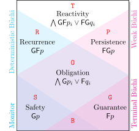
Forget about the LTL properties and about the red letters displayed in this picture for a moment.
- The reactivity class represents all possible omega-regular languages, i.e., all languages that can be recognized by a non-deterministic Büchi automaton.
- The recurrence subclass contains all properties that can be recognized by a deterministic Büchi automaton.
- The dual class, persistence properties, are those that can be recognized by a weak Büchi automaton (i.e., in each SCC either all states are accepting, or all states are rejecting).
- The intersection of recurrence and persistence classes form the obligation properties: any of those can be recognized by a weak and deterministic Büchi automaton.
- Guarantee properties are a subclass of obligation properties that can be recognized by terminal Büchi automata (i.e., upon reaching an accepting state, any suffix will be accepted).
- Safety properties are the dual of Guarantee properties: they can be recognized by ω-automata that accept all their runs (i.e., the acceptance condition is "true"). Note that since these automata are not necessary complete, it is still possible for some words not to be accepted. If we interpret the ω-automata with "true" acceptance as finite automata with all states marked as final, we obtain monitors, i.e., finite automata that recognize all finite prefixes that can be extended into valid ω-words.
- Finally, at the very bottom is an unnamed class that contains Safety properties that are also Guarantee properties: those are properties that can be represented by monitors in which the only cycles are self-loops labeled by true.
The "LTL normal forms" displayed in the above figure help to visualize the type of LTL formulas contained in each of these class. But note that (1) this hierarchy applies to all omega-regular properties, not just LTL-defined properties, and (2) the LTL expression displayed in the figure are actually normal forms in the sense that if an LTL-defined property belongs to the given class, then there exists an equivalent LTL property under the stated form, were \(p\), \(q\), \(p_i\) and \(q_i\) are subexpressions that may use only Boolean operators, the next operator (\(\mathsf{X}\)), and past-LTL operators (which are not supported by Spot). The combination of these allowed operators only makes it possible to express constraints on finite prefixes.
Obligations can be thought of as Boolean combinations of safety and guarentee properties, while reactivity properties are Boolean combinations of recurrence and persistence properties. The negation of a safety property is a guarantee property (and vice-versa), and the same duality hold for persistence and recurrence properties.
The red letters in each of these seven classes are keys used in Spot to denote the classes.
Deciding class membership
The --format=%h option can be used to display the "class key" of the
most precise class to which a formula belongs.
ltlfilt -f 'a U b' --format=%h
G
If you find hard to remember the class name corresponding to the class
keys, you can request verbose output with %[v]h:
ltlfilt -f 'a U b' --format='%[v]h'
guarantee
But actually any guarantee property is also an obligation, a
recurrence, a persistence, and a reactivity property. You can
get the complete list of classes using %[w]h or %[vw]h:
ltlfilt -f 'a U b' --format='%[w]h = %[vw]h'
GOPRT = guarantee obligation persistence recurrence reactivity
This --format option is also supported by randltl, genltl, and
ltlgrind. So for instance if you want to classify the 55 LTL
patterns of Dwyers et al. (FMSP'98) using this hierarchy, try:
genltl --dac-patterns --format='%[v]h' | sort | uniq -c
1 guarantee 2 obligation 1 persistence 2 reactivity 12 recurrence 37 safety
In this output, the most precise class is given for each formula, and
the count of formulas for each subclass is given. We have to remember
that the recurrence class also includes obligation, safety, and
guarantee properties. In this list, there are no formulas that belong
to the intersection of the guarantee and safety classes (it would
have been listed as guarantee safety).
From this list, only 3 formulas are not recurrence properties (i.e.,
not recognized by deterministic Büchi automata): one of them is a
persistence formula, the other two cannot be classified better than in
the reactivity class. Let's pretend we are interested in those
three non-recurrence formulas, we can use ltlfilt -v --recurrence to
remove all recurrence properties from the genltl --dac-pattern
output:
genltl --dac-patterns |
ltlfilt -v --recurrence --format='%[v]h, %f'
persistence, G!p0 | F(p0 & (!p1 W p2)) reactivity, G(p0 -> ((p1 -> (!p2 U (!p2 & p3 & X(!p2 U p4)))) U (p2 | G(p1 -> (p3 & XFp4))))) reactivity, G(p0 -> ((p1 -> (!p2 U (!p2 & p3 & !p4 & X((!p2 & !p4) U p5)))) U (p2 | G(p1 -> (p3 & !p4 & X(!p4 U p5))))))
Similar filtering options exist for other classes. Since these tests are automata-based, they work with PSL formulas as well. For instance, here is how to generate 10 random recurrence PSL formulas that are not LTL formulas, and that are not obligations:
randltl --psl -n -1 a b | ltlfilt -v --ltl | ltlfilt -v --obligation | ltlfilt --recurrence -n10
((Fb W 0) | (1 U !a)) W ({b[*]}[]-> 0)
GF({[*]}<>-> !a)
{[*]}[]-> X(b M F!Gb)
G!({a[*2]}<>-> (b & F(0 R a)))
FX({[*]} -> GFb)
G({b[*][:*1]} xor (Fb U Fa)) W b
(b R a) & (({1 | [*0]} -> (1 U a)) W 0)
G({[*]}[]-> Fa)
{[*]}[]-> F(1 U b)
0 R !({!a | a[*]}[]-> GXa)
Note that the order of the ltlfilt filters could be changed provided
the -n10 stays at the end. For instance we could first keep all
recurrence before removing obligations and then removing LTL formulas.
The order given above actually starts with the easier checks first and
keep the most complex tests at the end of the pipeline so they are
applied to fewer formulas. Testing whether a formula is an LTL
formula is very cheap, testing if a formula is an obligation is harder
(it may involves a translation to automata and a poweset
construction), and testing whether a formula is a recurrence is the
most costly procedure (it involves a translation as well, plus
conversion to deterministic Rabin automata, and an attempt to convert
the automaton back to deterministic Büchi). As a rule of thumb,
testing classes that are lower in the hierarchy is cheaper.
Since option -o (for specifying output file) also honors %-escape
sequences, we can use it with %h to split a list of formulas in 7
possible files. Here is a generation of 200 random LTL formulas
binned into aptly named files:
randltl -n 200 a b -o random-%h.ltl wc -l random-?.ltl
45 random-B.ltl 49 random-G.ltl 12 random-O.ltl 21 random-P.ltl 18 random-R.ltl 46 random-S.ltl 9 random-T.ltl 200 total
Deciding classes membership syntactically
LTL formulas can also be classified into related classes which we shall call syntactic-safety, syntactic-guarantee, etc. See tl.pdf for the grammar of each syntactic class. Any LTL-definable property of class C can be defined by an LTL formulas in class syntactic-C, but an LTL formula can describe a property of class C even if that formula is not in class syntactic-C (we just know that some equivalent formula is in class syntactic-C).
ltlfilt has options like --syntactic-guarantee,
--syntactic-persistence, etc. to match formulas from this classes.
Here is how to generate 10 random LTL formulas that describe safety properties but that are not in the syntactic-safety class:
randltl -n-1 a b | ltlfilt -v --syntactic-safety | ltlfilt --safety -n10
F!(!b <-> FGb) !Fb xor G((b xor (Xa M b)) U b) a W F(a -> b) ((0 R Xa) R a) -> Fa X(Xb & (!Ga R Ga)) (1 U b) | F(Fb W (a <-> FXa)) (a M 1) | (!a W a) (G!a W ((b M 1) -> Fa)) -> !a !a -> ((a xor !GFa) W 0) b M Gb
Since all those formulas describe safety properties, an exercise would
be to suggest equivalent formulas that are in the syntactic-safety
fragment. For instance b M Gb can be rewritten as just Gb, which
belongs to this fragment. In this particular case, ltlfilt
--simplify recognizes this:
ltlfilt --simplify -f 'b M Gb'
Gb
However in the general case Spot is not able to provide the equivalent formula from the appropriate syntactic class.
What to do with each class?
Obligation
Spot implements algorithms from Löding (Efficient minimization of deterministic weak ω-automata, IPL 2001) and Dax et al. (Mechanizing the powerset constructions for restricted classes of ω-automata, ATVA'07) in order to detect obligation properties, and produce minimal weak deterministic automata for them.
When running ltl2tgba -D on a formula that represents an
obligation property, you are guaranteed to obtain a minimal (in the
number of states) deterministic weak Büchi automaton that recognizes
it. Note that since the obligation class includes the safety and
guarantee classes, minimal deterministic automata will also be
produced for those classes. Dax et al.'s determinization of obligation
properties combined with Löding's minimization renders obsolete
older algorithms (and tools) that produced minimal deterministic
automata but only for the subclasses of safety or guarantee.
If ltl2tgba is run without -D (but still with the default --high
optimization level), the minimal weak deterministic automaton will
only be output if it is smaller than the non-deterministic automaton
the translator could produce before determinization and minimization.
For instance Fa R b is an obligation:
ltlfilt -f 'Fa R b' --format='%[v]h'
obligation
If we translate it without -D we get a 3-state non-deterministic
automaton (here we use autfilt --highlight-nondet to show where the
non-determinism occurs):
ltl2tgba 'Fa R b' | autfilt --highlight-nondet -d
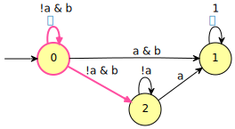
Note that the above automaton uses transition-based acceptance, but
since it is an obligation, using transition-based acceptance will not
improve anything, so we might as well require a Büchi automaton with
-B or just state-based acceptance with -S:
ltl2tgba -B 'Fa R b' | autfilt --highlight-nondet -d
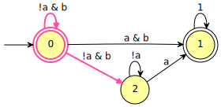
With ltl2tgba -D we get a (minimal) deterministic weak Büchi
automaton instead.
ltl2tgba -D 'Fa R b' -d
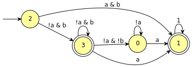
When we called ltl2tgba, without the option -D, the two automata
(non-deterministic and deterministic) were constructed, but the
deterministic one was discarded because it was bigger. Using -D
forces the deterministic automaton to be used regardless of its size.
The detection and minimization of obligation properties is also used
by autfilt when simplifying deterministic automata (they need to be
deterministic so that autfilt can easily compute their complement).
For instance, let us use ltl2dstar to construct a Streett automaton
for the obligation property a <-> GXa:
ltldo 'ltl2dstar --automata=streett' -f 'a <-> GXa' -d.a
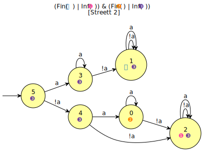
We can now minimize this automaton with:
ltldo 'ltl2dstar --automata=streett' -f 'a <-> GXa' | autfilt -D -C -d
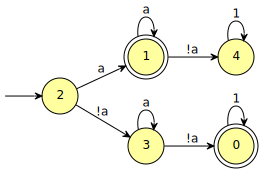
Here we have used option -C to keep the automaton complete, so that
the comparison with ltl2dstar is fair, since ltl2dstar always
output complete automata.
Guarantee
Guarantee properties can be translated into terminal automata. There is nothing particular in Spot about guarantee properties, they are all handled like obligations.
Again, using -D will always produce (minimal) deterministic Büchi
automata, even if they are larger than the non-deterministic version.
The output should be a terminal automaton in either case,
An example is a U Xb:
ltlfilt -f 'a U Xb' --format='%[v]h'
guarantee
ltl2tgba 'a U Xb' | autfilt --highlight-nondet -d
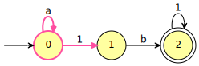
ltl2tgba -D 'a U Xb' -d
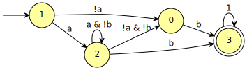
Safety
Safety properties also form a subclass of obligation properties, and again there is no code specific to them in the translation. However, the safety class corresponds to what can be represented faithfully by monitors, i.e., automata that accept all their infinite runs.
For most safety formulas, the acceptance output by ltl2tgba will
already be t (meaning that all runs are accepting). However since
the translator does not do anything particular about safety formulas,
it is possible to find some pathological formulas for which the
translator outputs a non-deterministic Büchi automaton where not all
run are accepting.
Here is an example:
ltlfilt -f '(a W Gb) M b' --format='%[v]h'
safety
ltl2tgba '(a W Gb) M b' | autfilt --highlight-nondet -d
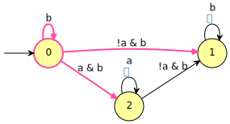
Actually, marking all states of this automaton as accepting would not be wrong, the translator simply does not know it.
Using -D will fix that: it then produces a deterministic automaton
that is guaranteed to be minimal, and where all runs are accepting.
ltl2tgba -D '(a W Gb) M b' -d
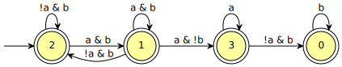
If you are working with safety formula, and know you want to work with
monitors, you can use the -M option of ltl2tgba. In this case
this will output the same automaton, but using the universal
acceptance (i.e. t). You can interpret this output as a monitor
(i.e., a finite automaton that accepts all prefixes that can be
extended into valid ω-words).
ltl2tgba -M '(a W Gb) M b' | autfilt --highlight-nondet -d
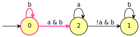
ltl2tgba -M -D '(a W Gb) M b' -d
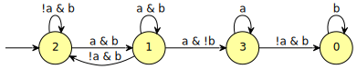
Note that the -M option can be used with formulas that are not
safety properties. In this case, the output monitor will recognize a
language larger than that of the property.
Recurrence
Recurrence properties can be represented by deterministic Büchi automata.
For the subclass of obligation properties, using -D is a sure way
to obain a deterministic automaton (and even a minimal one), but for
the recurrence properties that are not obligations the translator
does not make any special effort to produce deterministic automata,
even with -D (this might change in the future).
All properties that are not in the persistence class (this includes the recurrence properties that are not obligations) can benefit from transition-based acceptance. In other words using transition-based acceptance will often produce shorter automata.
The typical example is GFa, which can be translated into a 1-state
transition-based Büchi automaton:
ltlfilt -f 'GFa' --format='%[v]h'
recurrence
ltl2tgba 'GFa' -d
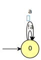
Using state-based acceptance, at least two states are required. For instance:
ltl2tgba -S 'GFa' -d
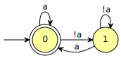
Here is an example of a formula for which ltl2tgba does not produce a
deterministic automaton, even with -D.
ltlfilt -f 'G(Gb | Fa)' --format='%[v]h'
recurrence
ltl2tgba -D 'G(Gb | Fa)' | autfilt --highlight-nondet -d
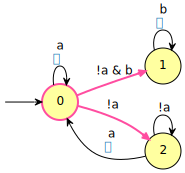
One way to obtain a deterministic Büchi automaton (it has to exist, since this is a recurrence property), is to chain a few algorithms implemented in Spot:
- Determinize the non-deterministic automaton to obtain a
deterministic automaton with parity acceptance: this is done by
using
ltl2tgba -G -D, with option-Gindicating that any acceptance condition may be used.ltl2tgba -G -D 'G(Gb | Fa)' -d.a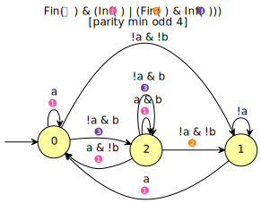
- Transform the parity acceptance into Rabin acceptance: this is
done with
autfilt --generalized-rabin. Because of the type of parity acceptance used, the result will actually be Rabin and not generalized Rabin.ltl2tgba -G -D 'G(Gb | Fa)' | autfilt --generalized-rabin -d.a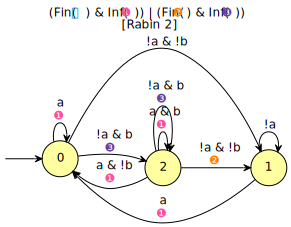
(The only change here is in the acceptance condition.)
- In step 4 we are going to convert the automaton to state-based
Büchi, and this sometimes works better if the input Rabin automaton
also uses state-based acceptance. So let us add
-Sto the previous command:ltl2tgba -G -D 'G(Gb | Fa)' | autfilt -S --generalized-rabin -d.a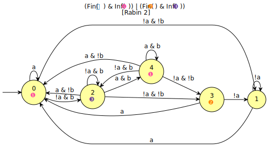
- Finally, convert the resulting automaton to BA, using
autfilt -B. Spot can convert automata with any acceptance condition to BA, but when the input is a deterministic Rabin automaton, it uses a dedicated algorithm that preserves determinism whenever possible (and we know it is possible, because we are working on a recurrence formula). Adding-Dhere to suggest that we are trying to obtain a deterministic automaton does not hurt, as it will enable simplifications as a side-effect (without-Dwe simply get a larger deterministic automaton).ltl2tgba -G -D 'G(Gb | Fa)' | autfilt -S --generalized-rabin | autfilt -B -D -d.a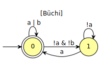
Here we are lucky that the deterministic Büchi automaton is even
smaller than the original non-deterministic version. As said earlier,
passing -S to the first autfilt was optional, but in this case it
helps producing a smaller automaton. Here is what we get without it:
ltl2tgba -G -D 'G(Gb | Fa)' |
autfilt --generalized-rabin |
autfilt -B -D -d.a
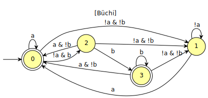
It is likely that ltl2tgba will implement all this processing chain
in the future.
Persistence
Since persistence properties are outside of the recurrence class,
they cannot be represented by deterministic Büchi automata. The typical
persistence formula is FGa, and using -D on this is hopeless.
ltl2tgba -D FGa -d.a
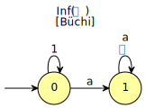
However since the negation of FGa is a recurrence, this negation
can be represented by a deterministic Büchi automaton, which means
that FGa could be represented by a deterministic co-Büchi automaton.
ltl2tgba does not generate co-Büchi acceptance, but we can do the
complementation ourselves:
ltlfilt --negate -f FGa | ltl2tgba -D | autfilt --complement -d.a
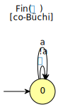
Note that in this example, we know that GFa is trivial enough that
ltl2tgba -D GFa will generate a deterministic automaton. In the
general case we might have to determinize the automaton as we did in
the previous section (we will do it again below).
Persistence properties can be represented by weak Büchi automata. The translator is aware of that, so when it detects that the input formula is a syntactic-persistence, it simplifies its translation slightly to ensure that the output will use at most one acceptance set. (It is possible to define a persistence properties using an LTL formula that is not a syntactic-persistance, this optimization is simply not applied.)
If the input is a weak property that is not syntactically weak, the output will not necessarily be weak. One costly way to obtain a weak automaton for a formula \(\varphi\) would be to first compute a deterministic Büchi automaton of the recurrence \(\lnot\varphi\) then complement the acceptance of the resulting automaton, yielding a deterministic co-Büchi automaton, and then transform that into a Büchi automaton.
Let's do that on the persistence formula F(G!a | G(b U a))
ltlfilt -f 'F(G!a | G(b U a))' --format='%[v]h'
persistence
Unfortunately the default output of the translation is not weak:
ltl2tgba 'F(G!a | G(b U a))' -d
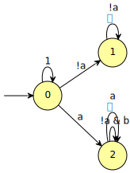
Furthermore it appears that ltl2tgba does generate a deterministic
Büchi automaton for the complement, instead we get a non-deterministic
generalized Büchi automaton:
ltlfilt --negate -f 'F(G!a | G(b U a))' |
ltl2tgba -D |
autfilt --highlight-nondet=5 -d.a
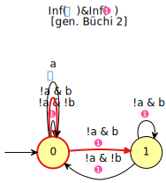
So let us use the same tricks as in the previous section, determinizing this automaton into a Rabin automaton, and then back to deterministic Büchi:
ltlfilt --negate -f 'F(G!a | G(b U a))' |
ltl2tgba -G -D |
autfilt --generalized-rabin |
autfilt --tgba -D -d.a
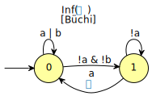
This is a deterministic Büchi automaton for the negation of our formula.
Now we can complement it to obtain a deterministic co-Büchi automaton for F(G!a | G(b U a)):
ltlfilt --negate -f 'F(G!a | G(b U a))' |
ltl2tgba -G -D |
autfilt --generalized-rabin |
autfilt --tgba -D |
autfilt --complement -d.ab
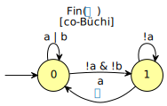
And finally we convert the result back to Büchi:
ltlfilt --negate -f 'F(G!a | G(b U a))' |
ltl2tgba -G -D |
autfilt --generalized-rabin |
autfilt --tgba -D |
autfilt --complement -B -d
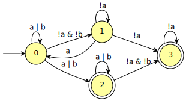
That is indeed, a weak automaton.